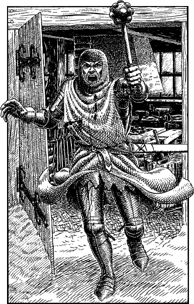

154
You reach the hamlet and hurry along its solitary road. Flanking you are two rows of low cottages, their thick-thatched roofs still intact despite the fiery carnage that has swept so near. Off to the right you see a barn-like building standing with its door ajar. A brazier of coals, an anvil, and a scattering of iron strips prove it to have once been a busy smithy. But now, like the surrounding buildings, it is seemingly deserted.

You are passing the open door when suddenly you hear a man’s voice. He has a strong Lencian accent and he is cursing you, thinking you to be a turncoat Stornland mercenary. As you turn to face the smithy door, a Lencian Crusader comes rushing out into the road, brandishing a heavy steel mace in his left hand. You yell at him that you are loyal to King Sarnac, but he ignores your plea and swings his weapon wildly at your head.
Lencian Crusader: COMBAT SKILL 34 ENDURANCE 36
Throughout this combat you are attempting to strike a blow that will render the knight unconscious. Fight this combat using the normal combat procedure.
If you manage to reduce the knight’s ENDURANCE to zero or below, turn to 272.